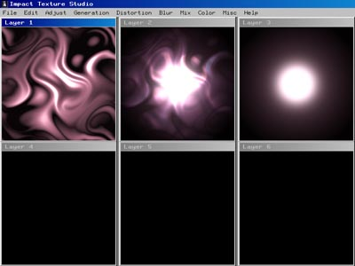

Information
Download (not archived)
Online Manual
Contact
ITS runs in dos, windows 95 and windows 98, if any decent vesa2.0 800x600 mode is available. ITS is freely usable and distributable, as long as no modifications are made to the program itself.

You can download Impact Texture Studio by clicking here (not archived).
Impact Texture Studio is made by
Alex "deadline" Bartholomeus.
You can contact the author by clicking
here.